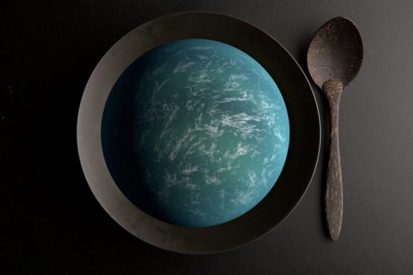
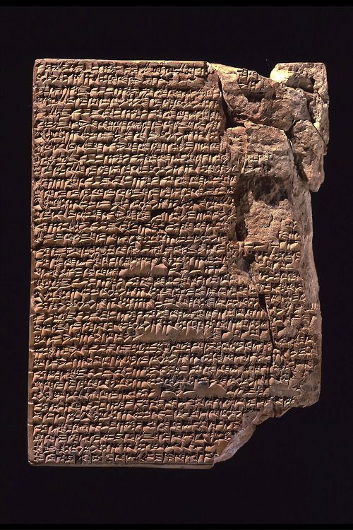

<!doctype html><html lang="no"><head><meta charset="utf-8"><meta name="viewport" content="width=device-width,initial-scale=1"><title>Oppskriften | Fremtidsbloggen</title><meta name="description" content="Det er en oppskrift på alt. En oppskrift på universet, planetene, en oppskrift på jorden, en oppskrift på livet, menneskene, plantene...."><link rel="stylesheet" href="../../assets/style.css"><link rel="canonical" href="https://fremtidsbloggen.no/post/oppskriften/"><link rel="alternate" hreflang="no" href="https://fremtidsbloggen.no/post/oppskriften/"><link rel="alternate" hreflang="en" href="https://fremtidsbloggen.no/en/post/oppskriften/"><link rel="alternate" hreflang="x-default" href="https://fremtidsbloggen.no/post/oppskriften/"><meta name="robots" content="noindex,nofollow"></head><body><div class="topline">En tidløs blogg inntil forandringene skjer</div>
<header class="header"><div class="container header-inner">
<a class="brand" href="../../index.html">Fremtids<span>bloggen</span><span aria-hidden="true">.</span></a>
<nav aria-label="Hovedmeny"><a href="../../index.html">Forside</a><a href="../../blogg/index.html">Artikler</a><a href="../../andre-ting/index.html">Andre ting</a><a href="../../om-fremtidsbloggen/index.html">Om bloggen</a><a href="../../kontakt/index.html">Kontakt</a><a class="language-switch" href="../../en/post/oppskriften/index.html" hreflang="en" lang="en" aria-label="Read this page in English">English</a></nav></div></header><main><div class="container"><div class="article-wrap"><div class="article-head"><a class="text-link" href="../../blogg/index.html">← Alle artikler</a><p class="meta">Teorier · 10. juni 2020 · 1 min lesing</p><h1>Oppskriften</h1><p class="subtitle">Det er en oppskrift på alt. En oppskrift på universet, planetene, en oppskrift på jorden, en oppskrift på livet, menneskene, plantene....</p></div><article class="article-body"><p>Det er en oppskrift på alt. En oppskrift på universet, planetene, en oppskrift på jorden, en oppskrift på livet, menneskene, plantene.</p><hr><hr><p>Hvis oppskriften var en Gud, vil den ha skapt alt etter sin egen oppskrift som den første oppskriften på alt.</p><p>Det er en oppskrift på hvordan livet skal bli, hvordan vi skal utvikle oss fra barn til voksne, hvordan vi oppfører oss som mennesker.</p><p>Oppskriften på vår egen personlige utvikling er avgjørende for alle rundt oss og ikke minst oss selv.</p><p>Det er en oppskrift for å bli rik, å bli fattig.</p><p>Det er en oppskrift for å få tonnevis med mat produsert / utviklet, det er en omvendt &quot;negativ-oppskrift&quot; som gjør at det mangler mat til befolkningen, mangel på vann.</p><p>Det er en &quot;negativ-oppskrift&quot; for å skape krig mellom nasjoner, mellom mennesker, borgerkriger. </p><p>En &quot;negativ-oppskrift&quot; på en krise som epidemier eller naturkatastrofer.</p><p>Naturen har sin egen oppskrift for å overleve, for å skape flere trær, planter og dyreliv.</p><p>Det er oppskrifter som ikke er blitt funnet på ennå, inne i noens hoder(hjerner), fremtidige hjerner eller i det tomme &quot;rommet&quot; som ingen noen gang har tenkt på. Et ukjent &quot;rom&quot; der alle fremtids-idéer ligger foran vår tid.</p><p>En oppskrift på planet-utforskning, romskips-utvikling. </p><p>En oppskrift for mennesket i det dype rom, med nye planeter som fremtidige kolonier.</p><p>Hva om det var en &quot;kokebok&quot; for enhver personlig utvikling på jorden, fra fattig til rik, fra depresjon til lykke.</p><p>En &quot;kokebok&quot; med oppskrifter på hvordan folk kan få kreative tanker de kan bruke til arbeid, forskning, skole, studier eller en form for innovasjon.</p><p>Det er en universell oppskrift på alt.</p><hr></article></div></div></main><footer class="footer"><div class="container footer-grid"><div><a class="brand" href="../../index.html">Fremtids<span>bloggen</span>.</a><p>Et sted for tanker om fremtiden – og andre ting.</p></div><div><p>Finn oss: <a href="https://www.instagram.com/fremtidsbloggen/">Instagram</a> · <a href="https://davidbnj.medium.com/">Medium</a> · <a href="https://ideaxtheory.com/">IdeXTeori</a></p><p>Kontakt: <a href="mailto:fremtidsbloggen@gmail.com">fremtidsbloggen@gmail.com</a></p><p>© Fremtidsbloggen</p></div></div></footer></body></html>